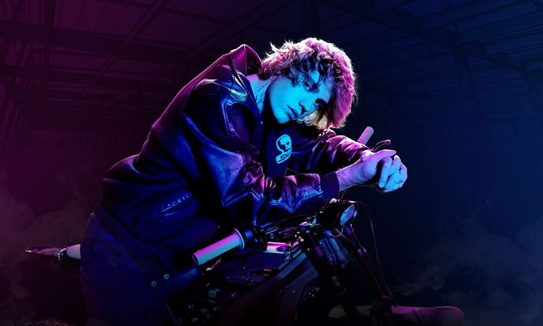

Justin Bieber Justice World Tour

(27 เมษายน 2565) - จัสติน บีเบอร์ (Justin Bieber) ประกาศตารางทัวร์ใหม่ สำหรับ “จัสทิส เวิลด์ ทัวร์” (Justice World Tour) ที่ทุกคนรอคอย ซึ่งรวมถึงการแสดงที่กรุงเทพ ที่จะมีขึ้นในวันอาทิตย์ที่ 6 พฤศจิกายน 2565 ที่สนามราชมังคลากีฬาสถาน โดยบีเบอร์จะเริ่มการแสดงในเอเชียวันที่ 22 ตุลาคม ที่กรุงกัวลาลัมเปอร์ ต่อด้วย สิงคโปร์ จาการ์ตา กรุงเทพฯ นาโกย่า โอซาก้า และโตเกียว ทัวร์รอบโลกทั้งหมดมากกว่า 100 วัน ตลอดปี 2565 และ 2566 ครอบคลุมทั่ว 5 ทวีป ทั้ง อเมริกาเหนือ อเมริกาใต้ ยุโรป สหราชอาณาจักร ออสเตรเลีย นิวซีแลนด์ แอฟริกาใต้ เอเชีย และตะวันออกกลาง และนี่เป็นเวิลด์ทัวร์ครั้งแรกของจัสติน นับตั้งแต่ เพอร์เพิส เวิลด์ ทัวร์ (Purpose World Tour) ซึ่งมีผู้เข้าชมถึง 2.7 ล้านคนในปี 2559-2560